Hoofdstuk 5Continue kansvariabelen en de normale verdeling
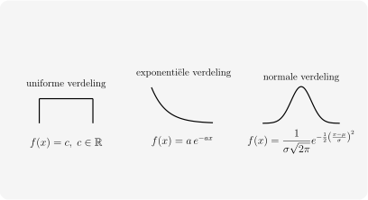
Leerplandoelstellingen (GO! Navigator)
Basisvorming (BV3_06)
-
• BV3_06.16 (MD 06.16) De leerlingen gebruiken de normale verdeling als continu model bij gegeven data.
-
– afbakening: grafische beoordeling van de toepasbaarheid van het model
-
– afbakening: rekenkundig gemiddelde en de standaardafwijking van de gegeven data als schatting voor de parameters van het model
-
– afbakening: grafische betekenis van gemiddelde en standaardafwijking van een normaal verdeelde kansvariabele in termen van de Gausskromme
-
-
• BV3_06.17 (MD 06.17) De leerlingen berekenen kansen bij een normaal verdeelde kansvariabele.
Gevorderde wiskunde (WD3_06.08)
-
• WD3_06.08.36 De leerlingen benaderen de binomiale verdeling door een normale verdeling.
Didactische uitwerking: grafische beoordeling van de toepasbaarheid van het model, grafische betekenis van gemiddelde en standaardafwijking van een normaal verdeelde kansvariabele in termen van de Gausskromme, berekenen kansen bij een normaal verdeelde kansvariabele
Extra uitleg: continue kansvariabelen, kansdichtheidsfunctie, cumulatieve verdelingsfunctie, verwachtingswaarde en variantie van een continue kansvariabele, uniforme verdeling, exponentiële verdeling, standaardnormale verdeling, Z-score, tabel van de standaardnormale verdeling, oneigenlijke integralen
I Continue kansvariabelen
1 Inleiding
Tot nu toe werkten we steeds met discrete kansvariabelen, waarbij de mogelijke \(X\)-waarden een interval van \(\mathbb {N}\) of \(\mathbb {N}\) zelf vormen. Indien de mogelijke waarden van een kansvariabele \(X\) echter een interval van \(\mathbb {R}\) of \(\mathbb {R}\) zelf vormen, spreken we van een continue kansvariabele.
Enkele voorbeelden hiervan uit het dagelijkse leven zijn
-
• De duur van een telefoongesprek opnemen
-
• Het volume bier in flesjes van een zeker type
-
• De tijd in dagen tussen twee opeenvolgende pannes van een bepaalde machine in een bedrijf
-
• ...
Voorbeelden
Zeg telkens of het gaat om een continue of een discrete kansvariabele.
-
(a) De lengte van een willekeurig gekozen persoon in cm: continue
-
(b) Het aantal besmette personen bij het uitbreken van een epidemie: discreet
-
(c) Winst of verlies op de beurs: continu
-
(d) Maandelijks nettoloon van een 40-jarige: continu
2 Kansdichtheidsfunctie en cumulatieve verdelingsfunctie
Waar men bij discrete kansvariabelen spreekt van de bijhorende kansfunctie, noemt men dit bij continue kansvariabelen de kansdichtheidsfunctie \(f(x)\).
kansdichtheidsfunctie \(f(x)\)
De kansdichtheidsfunctie \(f(x)\) van een continue kansvariabele \(X\) is de continue functie \(f\) in \([a,b]\subset \mathbb {R}\) die voldoet aan volgende eigenschappen:
-
• \(f(x) \geq 0\) voor alle \(x \in [a,b]\)
-
• \(\displaystyle \int _a^b f(x).dx = 1\)
-
• \(\displaystyle \forall x_1, x_2 \in [a,b]:\) \(\displaystyle P(x_1\leq X\leq x_2)=\int _{x_1}^{x_2} f(x).dx\)
M.a.w. een kansdichtheidsfunctie is een positieve functie, waarvan de oppervlakte tussen de grafiek van \(f\) en de \(x-as\) gelijk is aan 1. Merk op dat de laatste eigenschap ons een tool aanreikt voor het berekenen van kansen, indien \(f\) gekend is. Bovendien volgt hieruit dat de kans op een elementaire gebeurtenis nul is.
Verdelingsfunctie \(F(x)\)
We definiëren de cumulatieve verdelingsfunctie \(F\) als \(\displaystyle F(k)=P(X\leq k)=\int _{-\infty }^{k} f(x).dx\).
Dit stelt de totale oppervlakte voor tussen de x-as en de grafiek van de kansdichtheidsfunctie \(f(x)\) in het interval \(]-\infty , x]\).
Gevolg
\(\displaystyle P(x_1\leq X\leq x_2)=\int _{x_1}^{x_2} f(x).dx = F(x_2) - F(x_1)\)
Opmerking: Het is gevaarlijk om \(f\) en \(F\) te vergelijken!
-
• \(f(x)\) is geen gans, maar een kansdichtheid;
-
• \(F(x)\) is wel een kans.
3 Verwachtingswaarde en variantie
Definities
We breiden ook hier de definities uit tot een ’oneindige som’, door over te gaan naar integralen:
\(\begin {aligned} E(X)=\mu _X &\,= \int _{a}^{b} x\,f(x)\,dx \\[6pt] \operatorname {var}(X)=\sigma _X^{2} &\,= \int _{a}^{b} \bigl (x-\mu _X\bigr )^{2} f(x)\,dx \\[6pt] \sigma _X &\,= \sqrt {\operatorname {var}(X)} \end {aligned} \)
Figuren
Leuk weetje
\[ \operatorname {var}(X)=E(X^2)-\bigl (E(X)\bigr )^2 \]
4 Opmerking
Indien de mogelijke X-waarden gans \(\mathbb {R}\) vormen, zullen de grenzen \(a\) en \(b\) in de integralen van \(P(x_1\leq X\leq x_2)\), \(E(X)\) en \(var(X)\) uiteraard moeten vervangen worden door \(-\infty \) en \(+\infty \). De bekomen integralen noemen we dan oneigenlijke integralen. We berekenen ze met analoge methodes als de gewone bepaalde integralen (basisintegralen, substitutie, partiële integratie). Bij het invullen van de grenzen zullen we echter soms rekenregels voor limieten moeten toepassen. Zie hiervoor de oefeningen en bewijzen verder in dit hoofdstuk.
5 Voorbeelden
Voorbeeld 1
Bij het verwerken van stukken metaaldraad van 15cm in een fabriek blijft van elk stuk draad een overschot met lengte \(x\)cm over. Het getal \(x\) kunnen we beschouwen als de getalwaarde van een continue kansvariabele \(X\) waarvoor geldt:
\(f(x)=\frac {1}{15}\)
Wat is de kans dat een lukraak genomen draadoverschot een lengte van tenminste 5cm heeft?
Aangezien \(f(x)=\frac {1}{15}\), is \(X\) uniform verdeeld op \([0,15]\).
\(\seteqnumber{0}{}{0}\)\begin{align*} P(X\geq 5) &= \int _5^{15} \frac {1}{15}\,dx\\ &= \frac {1}{15}(15-5)\\ &= \frac {10}{15}\\ &= \boxed {\frac {2}{3}} \end{align*}
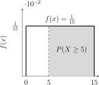
Dus de kans bedraagt \(\frac {2}{3}\approx 0.667\).
Voorbeeld 2
In een bepaald elektriciteitsnet is het tijdsverloop tussen twee stroomonderbrekingen gelijk aan \(x\) uur. Het getal \(x\) kunnen we beschouwen als de getalwaarde van een continue exponentieel verdeelde kansvariabele \(X\) waarvoor geldt:
\(f(x)=\frac {1}{24}.e^{-\frac {x}{24}}\)
Stel dat zich op dit ogenblik een stroomonderbreking voordoet. Wat is de kans dat zich binnen de 24 uur nog een onderbreking voordoet?
\(X\) is exponentieel verdeeld met parameter \(\lambda =\frac {1}{24}\).
\(\seteqnumber{0}{}{0}\)\begin{align*} P(X\leq 24) &= \int _0^{24} \frac {1}{24}e^{-x/24}\,dx\\ &= \left [-e^{-x/24}\right ]_0^{24}\\ &= -e^{-1}-(-1)\\ &= 1-e^{-1}\\ &\approx \boxed {0.6321} \end{align*}
De kans dat er binnen de \(24\) uur opnieuw een stroomonderbreking optreedt, is dus ongeveer \(63.2\%\).
Met GRM:
Y=: \(\mathtt {Y_1=\frac {1}{24}e^{-X/24}}\)
2ndcalc\(\mathtt {7:\int f(x)dx}\)
of fnInt(Y_1,X,0,24)
Voorbeeld 3
In een telefooncentrale is het tijdsverloop tussen het ontvangen van een oproep en het tot stand brengen van de verbinding gelijk aan \(x\) seconden. In sommige gevallen kunnen we dit getal \(x\) beschouwen als de getalwaarde van een continue exponentieel verdeelde kansvariabele \(X\) waarvoor geldt:
\(f(x)=a.e^{-ax}\) met \(a>0\)
Bepaal de constante \(a\) zodanig dat \(P(X\leq 2)=0.95\)
We gebruiken de integraal van de dichtheidsfunctie:
\(\seteqnumber{0}{}{0}\)\begin{align*} && P(X\leq 2) &= 0.95 &&\\ &\Leftrightarrow & \int _0^2 a e^{-ax}\,dx &= 0.95 &&\\ &\Leftrightarrow & -e^{-2a}-(-e^0) &= 0.95 &&\\ &\Leftrightarrow & \left [-e^{-ax}\right ]_0^2 &= 0.95 &&\\ &\Leftrightarrow & 1-e^{-2a} &= 0.95 &&\\ &\Leftrightarrow & e^{-2a} &= 0.05 &&\\ &\Leftrightarrow & -2a &= \ln (0.05) &&\\ &\Leftrightarrow & a &= -\frac {\ln (0.05)}{2} &&\\ &\Leftrightarrow & \Aboxed {a&=\frac {\ln (20)}{2}\approx 1.4979} && \end{align*}
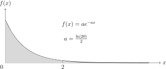
6 Oefeningen
Oefeningen uit het handboek Van Basis tot Limiet, Statistiek: nrs. 21, 22, 27 en 28 p. 107 e.v..
II De normale verdeling
Naast de binomiale verdeling, kunnen we ook de normale verdeling beschouwen. De normale verdeling is zonder twijfel de meest gebruikte verdeling in de statistiek. Van heel wat gegevens is immers geweten dat ze normaal verdeeld zijn:
-
• punten op een examen
-
• lengte en gewicht van mensen en dieren
-
• het IQ
-
• de effectieve inhoud van machinaal gevulde verpakkingen
-
• sportprestaties
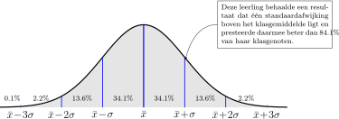
Men mag hier echter niet uit besluiten dat alles normaal verdeeld zou zijn. Typische voorbeelden van niet-normaal verdeelde gegevens zijn:
-
• winst of verlies bij beursgang
-
• leeftijd bij het overlijden van mens of dier
-
• inkomen
1 Definitie
Een continue kansvariabele \(X\) is normaal verdeeld als haar kansdichtheidsfunctie \(f\) gegeven wordt door
\(\displaystyle f(x)=\dfrac {1}{\sigma {\sqrt {2\pi }}}\;e^{-\dfrac {1}{2}\left (\dfrac {x-\mu }{\sigma }\right )^2}\)
Notatie
Een kansvariabele \(X\) die normaal verdeeld is wordt kort genoteerd met
\[X\sim N(\mu , \sigma )\]
Het is duidelijk dat de kansfunctie afhangt van twee parameters, het gemiddelde \(\mu \) en de standaardafwijking \(\sigma \) die de ligging van de verdeling bepalen.
Eigenschappen van de normale verdeling
Als \(X\sim N(\mu , \sigma )\), dan geldt
-
• verwachtingswaarde: \(E(X)=\mu \)
-
• variantie: \(var(X)=\sigma ^2\)
-
• standaardafwijking: \(\sigma \)
2 Grafische betekenis van \(\mu \) en \(\sigma \)
Grafische betekenis van \(\mu \)
We laten in het functievoorschrift van de normale verdeling
\[f(x)=\dfrac {1}{\sigma {\sqrt {2\pi }}}\;e^{-\dfrac {1}{2}\left (\dfrac {x-\mu }{\sigma }\right )^2}\]
het gemiddelde \(\mu \) variëren, terwijl we de standaardafwijking \(\sigma \) constant houden (\(\sigma =1\)). Hieronder zie je de grafieken voor verschillende waarden van \(\mu \):
We merken dat de grafieken van al deze normale verdelingen met constante \(\sigma =1\) op een verschuiving evenwijdig met de \(x\)-as met \(\mu \) eenheden na gelijk zijn.
Voor welke \(x\)-waarde vinden we steeds de top van de klokvormige kromme? \(x=\mu \)
Grafische betekenis van \(\sigma \)
We laten nu in het functievoorschrift
\[f(x)=\dfrac {1}{\sigma {\sqrt {2\pi }}}\;e^{-\dfrac {1}{2}\left (\dfrac {x-\mu }{\sigma }\right )^2}\]
de standaardafwijking \(\sigma \) variëren, terwijl we het gemiddelde \(\mu \) constant houden op \(\mu =0\).
We merken dat de grafieken van al deze normale verdelingen met constante \(\mu =0\) qua vorm gelijk zijn. Ze hebben wel allemaal een uitrekking of inkrimping evenwijdig met de \(y\)-as ondergaan.
Vul volgende tabel aan:
| \(\sigma \) | Hoogte van de top |
| 0.5 | \(\frac {1}{0.5\sqrt {2\pi }} \approx 0.7979\) |
| 1 | \(\frac {1}{1\sqrt {2\pi }} \approx 0.3989\) |
| 2 | \(\frac {1}{2\sqrt {2\pi }} \approx 0.1995\) |
| 4 | \(\frac {1}{4\sqrt {2\pi }} \approx 0.0997\) |
| ⋮ | ⋮ |
| \(\sigma \) | \(\frac {1}{\sigma \sqrt {2\pi }}\) |
Besluit grafische betekenis van \(\mu \) en \(\sigma \)
\(f\) is een symmetrische klokvormige kromme met top \((\mu ;\approx \frac {0.4}{\sigma })\). De waarde van \(\mu \) bepaalt dus de ligging van de top en de waarde van \(\sigma \) bepaalt de spreiding rond deze top.
3 Oefeningen
Bepaal in de onderstaande grafieken het gemiddelde \(\mu \) en de standaardafwijking \(\sigma \) van de vet gedrukte functie.
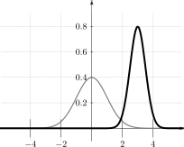
\[\mu =\opl {3}\]
\[\sigma =\opl {0.5}\]
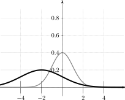
\[\mu =\opl {-2}\]
\[\sigma =\opl {2}\]
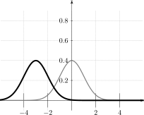
\[\mu =\opl {-3}\]
\[\sigma =\opl {1}\]
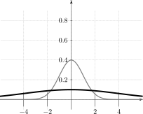
\[\mu =\opl {0}\]
\[\sigma =\opl {4}\]
III De standaardnormale verdeling
1 Definitie en kenmerken
In de vorige paragraaf werden grafieken van de normale verdeling verschoven (met behulp van \(\mu \)) en herschaald (met behulp van \(\sigma \)). Het is dus mogelijk om de normale verdeling te
-
• verschuiven zodat het gemiddelde \(\mu =0\) wordt,
-
• herschalen zodat de standaardafwijking \(\sigma =1\) wordt.
Een normale verdeling met gemiddelde 0 en standaardafwijking 1 of kort \(N(0,1)\) noemen we standaardnormaal verdeeld. Om aan te duiden dat we met de standaardnormale verdeling werken, gebruiken we de letter \(Z=\frac {X-\mu }{\sigma }\) voor gestandaardiseerde kansvariabele i.p.v. \(X\).
\begin{align*} f(z) &= \frac {1}{\sqrt {2\pi }} \cdot e^{-\frac {z^2}{2}} \\[6pt] F(k) &= P(Z\leq k) = \int _{-\infty }^{k} f(z) \cdot dz = \Phi (k) \text { (zie verder)} \\[6pt] E(Z) &= \int _{-\infty }^{+\infty } z \cdot f(z) \cdot dz = 0 \; \quad \Rightarrow \mu = 0 \\[6pt] \operatorname {var}(Z) &= \int _{-\infty }^{+\infty } z^2 \cdot f(z) \cdot dz = 1 \quad \Rightarrow \sigma = 1 \end{align*}
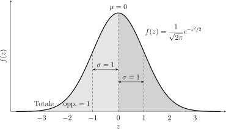
We bewijzen de eigenschappen voor \(E(Z)=0\) en \(var(Z)=1\).
Stelling: \(E(Z)=0\)
Voor de standaardnormale verdeling geldt:
\(\seteqnumber{0}{}{0}\)\begin{align*} E(Z) &= \int _{-\infty }^{+\infty } z\cdot f(z)\,dz\\ &= \int _{-\infty }^{+\infty } z\cdot \frac {1}{\sqrt {2\pi }}e^{-z^2/2}\,dz\\ &= \frac {1}{\sqrt {2\pi }}\int _{-\infty }^{+\infty } z e^{-z^2/2}\,dz\\ &= -\frac {1}{\sqrt {2\pi }}\left [e^{-z^2/2}\right ]_{-\infty }^{+\infty }\\ &= -\frac {1}{\sqrt {2\pi }}(0-0)\\ &= \boxed {0} \end{align*}
Opmerking: \(z e^{-z^2/2}\) is een oneven functie is, zodat de integraal over \(]-\infty ,+\infty [\) ook daarom gelijk is aan \(0\).
Stelling: \(var(Z)=1\)
Omdat \(E(Z)=0\), geldt:
\(\seteqnumber{0}{}{0}\)\begin{align*} var(Z) &= \int _{-\infty }^{+\infty } z^2\cdot f(z)\,dz \\ &= \int _{-\infty }^{+\infty } z^2\cdot \frac {1}{\sqrt {2\pi }}e^{-z^2/2}\,dz \\ &= \frac {1}{\sqrt {2\pi }}\int _{-\infty }^{+\infty } z \cdot z e^{-z^2/2}\,dz \\ & \qquad \qquad \begin{aligned} u &= z & dv &= z e^{-z^2/2}dz \\ du &= dz & v &= -e^{-z^2/2} \end {aligned} \\[0.5em] &= \frac {1}{\sqrt {2\pi }}\left (\left [-z e^{-z^2/2}\right ]_{-\infty }^{+\infty } + \int _{-\infty }^{+\infty } e^{-z^2/2}\,dz\right ) \\ &= -\frac {1}{\sqrt {2\pi }}\left [z e^{-z^2/2}\right ]_{-\infty }^{+\infty } + \int _{-\infty }^{+\infty }\underbrace {\frac {1}{\sqrt {2\pi }} e^{-z^2/2}}_{=f(z)}\,dz\\ &\qquad \qquad \begin{aligned} \left [z e^{-z^2/2}\right ]_{-\infty }^{+\infty } &= \underbrace {\lim _{z\to +\infty }ze^{-z^2/2}}_{\to +\infty \cdot 0}-\underbrace {\lim _{z\to -\infty }ze^{-z^2/2}}_{\to -\infty \cdot 0}\\ &\qquad \qquad \begin{aligned} \lim _{z\to +\infty }ze^{-z^2/2} &= \lim _{z\to +\infty }\dfrac {z}{e^{z^2/2}}\\ &= "\dfrac {+\infty }{+\infty }"\\ &= \lim _{z\to +\infty }\dfrac {1}{\frac {2z}{2}e^{z^2/2}}\\ &= \dfrac {1}{+\infty \cdot +\infty }\\ &= 0 \end {aligned}\\ &= 0 - 0\\ &= 0 \end {aligned}\\ &= 0 + \underbrace {\int _{-\infty }^{+\infty } f(z)\,dz}_{=1} \qquad \text {(omdat $f(z)$ een kansfunctie is)}\\ &= \boxed {1} \end{align*}
2 Kansen berekenen bij standaardnormaal verdeelde populaties
Om de kans te berekenen dat iemand minder heeft dan een bepaalde waarde \(k\), volstaat het om de integraal voor \(F(k)\) te berekenen. Dit stelt de oppervlakte voor van het deel van het vlak begrepen tussen de
gestandaardiseerde normale kromme \(f(z)\), de z-as en links van \(z=k\).
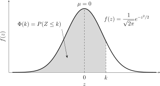
\[F(k)=P(Z\leq k)=\dfrac {1}{\sqrt {2\pi }}\int _{-\infty }^{k}e^{-\frac {1}{2}z^2}dz=\Phi (k)\;.\]
Omdat de integraal voor \(F\) enkel met numerieke methodes te berekenen valt (bv m.b.v. de middelpuntsregel), zullen wij hem voor de oefeningen niet zelf berekenen. Voor de standaardnormale verdeling bestaat er een tabel waaruit je deze kansen rechtstreeks kan aflezen, zie in de bijlage achteraan, of zie ook in het handboek Van Basis tot Limiet, Statistiek p. 51. Uiteraard kan deze integraal ook met onze GRM berekend worden (normalcdf).
Naar verdere studies toe is het echter belangrijk goed met de tabel te leren werken.
Historisch weetje. De eerste gepubliceerde tabel die als voorloper van onze moderne standaardnormaaltabel kan worden beschouwd, werd opgesteld door Chrétien Kramp in 1799. Laplace had al eerder het nut van zulke
tabellen ingezien, maar Kramp was degene die ze effectief publiceerde.
David, H. A. (2005). Tables Related to the Normal Distribution: A Short History. The American Statistician, 59(4), 309–311. https://doi.org/10.1198/000313005X70911
Voorbeeld 1
Gegeven: Een populatie die kan beschreven worden door een standaardnormale verdeling. Bereken het percentage waarnemingen kleiner dan \(1.36\).
Figuur:
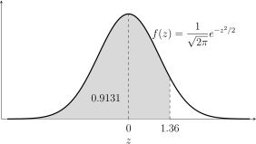
In symbolen: \(\Phi (1.36)=P(Z\leq 1.36)\)
Methode:
-
• Zoek de waarde \(1.36\) in de tabel.
-
– Voor de eerste 2 cijfers kijk je in de linkerkolom van de tabel: ga op zoek naar de rij die overeenstemt met de waarde 1.3.
-
– Vervolgens schuif je op naar rechts tot de kolom die overeenkomt met 0.06.
-
-
• Het percentage waarnemingen kleiner dan 1.36 bedraagt dus 91.308%
Met GRM:
normalcdf(-1E99,1.36,0,1) 2nddistr2:normalcdf(
= 0.9130858…
Voorbeeld 2
Gegeven: Een populatie die kan beschreven worden door een standaardnormale verdeling. Bereken het percentage waarnemingen gelegen tussen \(1.03\) en \(2.95\).
In symbolen: \(P(1.03\leq Z\leq 2.95)\)
Dit is niet rechtstreeks in de tabel af te lezen. We herschrijven het gevraagde als volgt:
Standaardnormale verdeling met gearceerde oppervlakte tussen \(z=1.03\) en \(z=2.95\).
\(\seteqnumber{0}{}{0}\)\begin{align*} P(1.03\leq Z\leq 2.95) &= P(Z\leq 2.95)-P(Z\leq 1.03)\\ &= \Phi (2.95)-\Phi (1.03)\\ &= 0.9984-0.8485\\ &\boxed {= 0.1499} \end{align*}
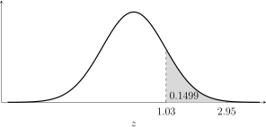
Dus ongeveer \(14.99\%\) van de waarnemingen ligt tussen \(1.03\) en \(2.95\).
Met GRM:
\(\seteqnumber{0}{}{0}\)\begin{align*} P(1.03\leq Z\leq 2.95) &= \texttt {normalcdf}(1.03,2.95,0,1)\\ &\approx \boxed {0.1499} \end{align*} 2nd DISTR 2:normalcdf(
Voorbeeld 3
Gegeven: Een populatie die kan beschreven worden door een standaardnormale verdeling. Bereken het percentage waarnemingen kleiner dan \(-2.07\).
In symbolen: \(P(Z\leq -2.07)\)
Ook dit is niet rechtstreeks uit de tabel af te lezen, maar we kunnen het gevraagde opnieuw herschrijven tot iets dat wel uit de tabel af te lezen is:
\begin{align*} P(Z\leq -2.07) &= P(Z\geq 2.07)\\ &= 1-P(Z\leq 2.07)\\ &= 1-\Phi (2.07)\\ &= 1-0.9808\\ &= \boxed {0.0192} \end{align*}
Dus ongeveer \(1.92\%\) van de waarnemingen is kleiner dan \(-2.07\).
Met GRM:
\(\seteqnumber{0}{}{0}\)\begin{align*} P(Z\leq -2.07) &= \texttt {normalcdf(-1E99,-2.07,0,1)}\\ &\approx \boxed {0.0192} \end{align*}
Overzicht formules met \(a,b \in \mathbb {R}^+\)
\[P(Z\leq a)=\Phi (a)\]
\[P(Z\geq a)=1-\Phi (a)\]
\[P(Z\leq -a)=1-\Phi (a)\]
\[P(Z\geq -a)=\Phi (a)\]
\[P(a\leq Z \leq b)=\Phi (b)-\Phi (a)\]
\[P(-a\leq Z \leq b)=\Phi (b)+\Phi (a)-1\]
\[P(-a\leq Z \leq -b)=\Phi (a)-\Phi (b)\]
Het is niet nodig om deze formules uit het hoofd te leren. Maak een schets van de standaardnormale en duid er het gevraagde gebied er op aan. Beredeneer dan zelf hoe je aan het gebied komt door enkel \(\Phi (z)\) te gebruiken.
3 Oefeningen
Oefening 1
Bepaal met de tabel van de standaardnormale verdeling volgende kansen, maak telkens een verduidelijkende schets en controleer met je GRM:
-
(a) \(P(Z\leq 0.97)=\)\(\Phi (0.97)=0.8340\)
-
(b) \(P(0\leq Z\leq 0.71)=\)\(\Phi (0.71)-\Phi (0)=0.7611-0.5000=0.2611\)
-
(c) \(P(2\leq Z \leq 2.5)=\)\(\Phi (2.50)-\Phi (2.00)=0.9938-0.9772=0.0166\)
-
(d) \(P(Z \leq -0.44)=\)\(\Phi (-0.44)=1-\Phi (0.44)=1-0.6700=0.3300\)
-
(e) \(P(-1.42 \leq Z \leq 2.42)=\)\(\Phi (2.42)-\Phi (-1.42)=0.9922-0.0778=0.9144\)
-
(f) \(P(Z \geq -0.44)=\)\(1-\Phi (-0.44)=1-0.3300=0.6700\)
-
(g) \(P(-2.42 \leq Z \leq -1.42)=\)\(\Phi (-1.42)-\Phi (-2.42)=0.0778-0.0078=0.0700\)
-
(h) \(P(Z \geq 0.44)=\)\(1-\Phi (0.44)=1-0.6700=0.3300\)
-
(i) \(P(|Z| \leq 2.1)=\)\(P(-2.1\leq Z\leq 2.1)=\Phi (2.10)-\Phi (-2.10)=0.9642\)
Oefening 2
Bepaal volgende kansen, zonder gebruik te maken van de tabel van de standaardnormale of GRM:
-
(a) \(P(-\infty \leq Z \leq +\infty )=\)\(1\)
Aangezien dit de volledige oppervlakte onder de dichtheidskromme is.
-
(b) \(P(Z\leq 0)=\)\(0.5\)
Aangezien de standaardnormale verdeling symmetrisch is ten opzichte van \(0\), is de oppervlakte links van \(0\) gelijk aan de helft van de totale oppervlakte.
-
(c) \(P(Z\geq 0)=\)\(0.5\)
Aangezien de standaardnormale verdeling symmetrisch is ten opzichte van \(0\), is de oppervlakte rechts van \(0\) gelijk aan de helft van de totale oppervlakte.
IV Kansen berekenen bij de normale verdeling
Om kansen te berekenen bij willekeurig normaal verdeelde kansvariabelen zal het volstaan deze te hervormen naar een gestandaardiseerde normale verdeling m.b.v. de Z-score.
\(Z=\dfrac {X-\mu }{\sigma }\;.\)
Een \(Z\)-score geeft aan hoeveel standaardafwijkingen de oorspronkelijke waarneming van het gemiddelde verwijderd is en in welke richting. Waarnemingen groter dan het gemiddelde geven een positieve \(Z\)-score, waarnemingen die kleiner zijn dan het gemiddelde een negatieve.
\(Z\)-scores worden o.a. gebruikt om waarnemingen uit verschillende populaties en/of steekproeven met elkaar te vergelijken. Zie hiervoor ook hoofdstuk 3.
1 Voorbeeld
Gegeven: Een normaal verdeelde populatie met gemiddelde \(\mu =5\) en standaardafwijking \(\sigma =2\). Bepaal de kans \(P(5<X<9)\)
We standaardiseren de grenzen:
\(\seteqnumber{0}{}{0}\)\begin{align*} P(5<X<9) &= P\left (\frac {5-5}{2} < Z < \frac {9-5}{2}\right ) \\ &= P(0 < Z < 2) \\ &= \Phi (2) - \Phi (0) \\ &= 0.9772 - 0.5 \\ &= 0.4772 \end{align*}
2 Oefeningen
Zie handboek Van Basis tot Limiet, Statistiek: nrs. 4, 5, 8, 9, 10, 12, 14 en 20 p. 72 en volgende.
V Binomiale verdeling benaderen door een normale verdeling
1 Inleiding
Vroeger moest men aan de universiteit een 12 op 20 halen voor een vak om zeker geslaagd te zijn in eerste zit voor dat vak. Want haalde je voor één van de andere vakken minder dan 10 op 20, dan moest je een herexamen doen
voor alle vakken onder de 12.
Bereken de kans om minstens 60% te halen op een meerkeuze examens bestaande uit 50 vragen met telkens 4 keuzes en zonder gok correctie, die je volledig willekeurig beantwoordt?
Je ziet snel in dat het hier een binomiale verdeling \(X\sim B(50, 1/4)\) betreft en om dit zonder GRM uit te rekenen heb je 20 keer de formule
\[f(k)=C_{50}^{k}(1/4)^k(3/4)^{n-k}\]
nodig om \(P(X\geq 30)=f(30)+f(31)+\cdots +f(50)\) uit te rekenen.
Laten we in de plaats van het vele rekenen eens kijken naar de grafiek van de kansfunctie:
seq(X,X,0,50) \(\to \) L1 2ndlistOPS5:seq
binompdf(50,1/4,\(L_1\)) \(\to \) L2 2nddistrA:binompdf(
y= Leeg!
window \(x: 0\to 50 \quad y: 0\to 0.2\)
2nd stat plot Plot1 On, Type dots, L1, L2
graph
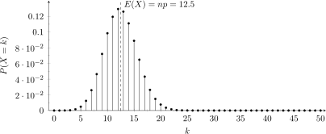
Merk op dat we de \(x\) waarden door hebben laten lopen tot aan \(x=50\) want de kans is niet onbestaand dat we heel veel geluk hebben en dat we alle vragen juist beantwoorden.
Bereken voor voorgaande oefening de verwachtingswaarde, standaardafwijking en de hoogte van de top. Duid deze aan op de bovenstaande grafiek.
-
• \(\mu =E(X)=n\cdot p=\) \(12.5\)
-
• \(\sigma =\sqrt {n\cdot p\cdot q}=\) \(3.06\)
-
• hoogte top: \(0.1294\)
Mochten we nu de toppen van bovenstaande staafjes verbinden met een lijn, dan merken we op dat deze lijn goed te benaderen is door een normale verdeling met hetzelfde gemiddelde \(\mu \) als de verwachtingswaarde en met dezelfde standaardafwijking \(\sigma \) als die bij de binomiale verdeling horen.
2 Benadering
Deze benadering zal steeds gelden voor voldoende grote \(n\), we zullen afspreken
Binomiale verdeling benaderen
Een binomiale verdeling \(X\sim B(n,p)\) met verwachtingswaarde \(\mu \) en standaardafwijking \(\sigma \) mag worden benaderd door een normale verdeling
\[B(n,p)\sim N(\mu ,\sigma )\]
op voorwaarde dat \(n\cdot p\geq 5\), \(n\cdot q\geq 5\) en \(n\geq 20\).
Opmerking
De binomiale verdeling is een discrete verdeling. Ze wordt nu dus benaderd door een continue verdeling.
Kansen berekenen van een binomiale verdeling wordt nu kinderspel, want de binomiale verdeling is normaal verdeeld en de normale verdeling kunnen we standaardiseren. We hoeven dus enkel maar nog op te zoeken in de tabel.
3 Continuı̈teitscorrectie
Er bestaat echter een essentieel verschil tussen een binomiale en een normale verdeling. De eerste is namelijk een discrete,
\[ X\in \{0,1,2,\dots ,n\}, \]
terwijl de normale verdeling een continue verdeling is,
\[ X\in \R . \]
Aangezien de kans op een elementaire gebeurtenis bij de normale verdeling gelijk aan nul is, is een kleine correctie noodzakelijk. Wanneer we een binomiale verdeling benaderen door een normale verdeling, vervangen we daarom elke gehele uitkomst \(k\) door een interval met breedte \(1\), namelijk
\[ [k-0.5,\;k+0.5]. \]
Basisidee van de continuı̈teitscorrectie
De kans \(P(X=k)\) bij een discrete verdeling benaderen we door de oppervlakte onder de continue normale kromme tussen \(k-0.5\) en \(k+0.5\):
\[ P(X=k)\approx P(k-0.5\leq Y\leq k+0.5), \]
waarbij \(Y\) de normale benadering van \(X\) is.
Overzicht
Als \(X\sim B(n,p)\) en \(Y\sim N(\mu ,\sigma )\) de normale benadering is, dan geldt voor een geheel getal \(k\):
| binomiale kans | normale benadering met continuı̈teitscorrectie |
| \(P(X=k)\) | \(P(k-0.5\leq Y\leq k+0.5)\) |
| \(P(X<k)\) | \(P(Y\leq k-0.5)\) |
| \(P(X\leq k)\) | \(P(Y\leq k+0.5)\) |
| \(P(X>k)\) | \(P(Y\geq k+0.5)\) |
| \(P(X\geq k)\) | \(P(Y\geq k-0.5)\) |
Belangrijk
Let goed op het verschil tussen strikte en niet-strikte ongelijkheden:
\[ X>k \;\Rightarrow \; Y\geq k+0.5, \qquad X\geq k \;\Rightarrow \; Y\geq k-0.5. \]
Hier gebeuren de meeste fouten.
Voorbeelden
\(\seteqnumber{0}{}{0}\)\begin{align*} P(X=7) &\approx P(6.5\leq Y\leq 7.5)\\ P(X\leq 7) &\approx P(Y\leq 7.5)\\ P(X<7) &\approx P(Y\leq 6.5)\\ P(X\geq 7) &\approx P(Y\geq 6.5)\\ P(X>7) &\approx P(Y\geq 7.5) \end{align*}
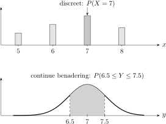
Toepassing op percentages
Bij de vraag “minstens \(60\%\) halen op \(50\) vragen” geldt:
\[ 60\%\text { van }50 = 30. \]
Dus:
\[ P(X\geq 30)\approx P(Y\geq 29.5). \]
Besluit
Gebruik bij een normale benadering steeds eerst de continuı̈teitscorrectie en standaardiseer pas daarna.
4 Voorbeeld 1
Bereken de kans om minstens 60% te halen op een meerkeuze examen bestaande uit 50 vragen met telkens 4 keuzes en zonder gok correctie, die je volledig willekeurig beantwoordt?
-
(a) Bepaal de verdeling van de opgave: \(X \sim B\left (50,\frac 14\right )\)
-
(b) Controleer de randvoorwaarden om te zien of we kunnen overgaan naar een normale verdeling:
\(\seteqnumber{0}{}{0}\)\begin{align*} np &= 50\cdot \frac 14 = 12.5\\ n(1-p) &= 50\cdot \frac 34 = 37.5 \end{align*} groter dan \(5\) \(\Rightarrow \) benaderen maar
-
(c) Ga over naar de normale verdeling:
-
(d) Bereken de \(z\)-score:
Met continuı̈teitscorrectie nemen we \(29.5\).
\[z = \frac {29.5-12.5}{3.06} \approx \boxed {5.55}\]
-
(e) Bepaal de gevraagde kans:
Omdat \(60\%\) van \(50\) gelijk is aan \(30\), zoeken we:
\(\seteqnumber{0}{}{0}\)\begin{align*} P(X\geq 30) &\approx P(Y\geq 29.5)\\ &= P(Z\geq 5.55)\\ &= 1-P(Z<5.55)\\ &\approx 1-0.99999999\\ &\approx \boxed {1.4\cdot 10^{-8}} \end{align*}
-
(f) Antwoord:
De kans is verwaarloosbaar klein: ongeveer \(1.4\cdot 10^{-8}\), dus praktisch \(0\%\).
5 Voorbeeld 2
We gooien 100 maal een muntstuk op. Hoe groot is de kans op meer dan 60 keer munt?
\[ X \sim B\left (100,\frac 12\right ) \]
We benaderen binomiaal met normaal:
\(\seteqnumber{0}{}{0}\)\begin{align*} \mu &= np = 100\cdot \frac 12 = 50\\ \sigma &= \sqrt {np(1-p)} = \sqrt {100\cdot \frac 12 \cdot \frac 12} = 5 \end{align*} Dus:
\[ Y \sim \mathcal {N}(50,5) \]
We zoeken:
\(\seteqnumber{0}{}{0}\)\begin{align*} P(X>60) &= P(X\geq 61)\\ &\approx P(Y\geq 60.5) \end{align*} De \(z\)-score is:
\(\seteqnumber{0}{}{0}\)\begin{align*} z &= \frac {60.5-50}{5}\\ &= 2.1 \end{align*} Dus:
\(\seteqnumber{0}{}{0}\)\begin{align*} P(X>60) &\approx P(Z>2.1)\\ &= 1-P(Z<2.1)\\ &= 1-0.9821\\ &= \boxed {0.0179} \end{align*} De kans op meer dan \(60\) keer munt is dus ongeveer \(1.79\%\).
6 Oefeningen
Zie handboek VBTL, Statistiek, maak zeker nrs. 12, 13, 14, 15 en 16 op p. 167.
A Tabel standaardnormale verdeling
| \(z\) | 0.00 | 0.01 | 0.02 | 0.03 | 0.04 | 0.05 | 0.06 | 0.07 | 0.08 | 0.09 | |||||||||||
| 0.0 | 0.5000 | 0.5040 | 0.5080 | 0.5120 | 0.5160 | 0.5199 | 0.5239 | 0.5279 | 0.5319 | 0.5359 | |||||||||||
| 0.1 | 0.5398 | 0.5438 | 0.5478 | 0.5517 | 0.5557 | 0.5596 | 0.5636 | 0.5675 | 0.5714 | 0.5753 | |||||||||||
| 0.2 | 0.5793 | 0.5832 | 0.5871 | 0.5910 | 0.5948 | 0.5987 | 0.6026 | 0.6064 | 0.6103 | 0.6141 | |||||||||||
| 0.3 | 0.6179 | 0.6217 | 0.6255 | 0.6293 | 0.6331 | 0.6368 | 0.6406 | 0.6443 | 0.6480 | 0.6517 | |||||||||||
| 0.4 | 0.6554 | 0.6591 | 0.6628 | 0.6664 | 0.6700 | 0.6736 | 0.6772 | 0.6808 | 0.6844 | 0.6879 | |||||||||||
| 0.5 | 0.6915 | 0.6950 | 0.6985 | 0.7019 | 0.7054 | 0.7088 | 0.7123 | 0.7157 | 0.7190 | 0.7224 | |||||||||||
| 0.6 | 0.7257 | 0.7291 | 0.7324 | 0.7357 | 0.7389 | 0.7422 | 0.7454 | 0.7486 | 0.7517 | 0.7549 | |||||||||||
| 0.7 | 0.7580 | 0.7611 | 0.7642 | 0.7673 | 0.7703 | 0.7734 | 0.7764 | 0.7794 | 0.7823 | 0.7852 | |||||||||||
| 0.8 | 0.7881 | 0.7910 | 0.7939 | 0.7967 | 0.7995 | 0.8023 | 0.8051 | 0.8078 | 0.8106 | 0.8133 | |||||||||||
| 0.9 | 0.8159 | 0.8186 | 0.8212 | 0.8238 | 0.8264 | 0.8289 | 0.8315 | 0.8340 | 0.8365 | 0.8389 | |||||||||||
| 1.0 | 0.8413 | 0.8438 | 0.8461 | 0.8485 | 0.8508 | 0.8531 | 0.8554 | 0.8577 | 0.8599 | 0.8621 | |||||||||||
| 1.1 | 0.8643 | 0.8665 | 0.8686 | 0.8708 | 0.8729 | 0.8749 | 0.8770 | 0.8790 | 0.8810 | 0.8830 | |||||||||||
| 1.2 | 0.8849 | 0.8869 | 0.8888 | 0.8907 | 0.8925 | 0.8944 | 0.8962 | 0.8980 | 0.8997 | 0.9015 | |||||||||||
| 1.3 | 0.9032 | 0.9049 | 0.9066 | 0.9082 | 0.9099 | 0.9115 | 0.9131 | 0.9147 | 0.9162 | 0.9177 | |||||||||||
| 1.4 | 0.9192 | 0.9207 | 0.9222 | 0.9236 | 0.9251 | 0.9265 | 0.9279 | 0.9292 | 0.9306 | 0.9319 | |||||||||||
| 1.5 | 0.9332 | 0.9345 | 0.9357 | 0.9370 | 0.9382 | 0.9394 | 0.9406 | 0.9418 | 0.9429 | 0.9441 | |||||||||||
| 1.6 | 0.9452 | 0.9463 | 0.9474 | 0.9484 | 0.9495 | 0.9505 | 0.9515 | 0.9525 | 0.9535 | 0.9545 | |||||||||||
| 1.7 | 0.9554 | 0.9564 | 0.9573 | 0.9582 | 0.9591 | 0.9599 | 0.9608 | 0.9616 | 0.9625 | 0.9633 | |||||||||||
| 1.8 | 0.9641 | 0.9649 | 0.9656 | 0.9664 | 0.9671 | 0.9678 | 0.9686 | 0.9693 | 0.9699 | 0.9706 | |||||||||||
| 1.9 | 0.9713 | 0.9719 | 0.9726 | 0.9732 | 0.9738 | 0.9744 | 0.9750 | 0.9756 | 0.9761 | 0.9767 | |||||||||||
| 2.0 | 0.9772 | 0.9778 | 0.9783 | 0.9788 | 0.9793 | 0.9798 | 0.9803 | 0.9808 | 0.9812 | 0.9817 | |||||||||||
| 2.1 | 0.9821 | 0.9826 | 0.9830 | 0.9834 | 0.9838 | 0.9842 | 0.9846 | 0.9850 | 0.9854 | 0.9857 | |||||||||||
| 2.2 | 0.9861 | 0.9864 | 0.9868 | 0.9871 | 0.9875 | 0.9878 | 0.9881 | 0.9884 | 0.9887 | 0.9890 | |||||||||||
| 2.3 | 0.9893 | 0.9896 | 0.9898 | 0.9901 | 0.9904 | 0.9906 | 0.9909 | 0.9911 | 0.9913 | 0.9916 | |||||||||||
| 2.4 | 0.9918 | 0.9920 | 0.9922 | 0.9925 | 0.9927 | 0.9929 | 0.9931 | 0.9932 | 0.9934 | 0.9936 | |||||||||||
| 2.5 | 0.9938 | 0.9940 | 0.9941 | 0.9943 | 0.9945 | 0.9946 | 0.9948 | 0.9949 | 0.9951 | 0.9952 | |||||||||||
| 2.6 | 0.9953 | 0.9955 | 0.9956 | 0.9957 | 0.9959 | 0.9960 | 0.9961 | 0.9962 | 0.9963 | 0.9964 | |||||||||||
| 2.7 | 0.9965 | 0.9966 | 0.9967 | 0.9968 | 0.9969 | 0.9970 | 0.9971 | 0.9972 | 0.9973 | 0.9974 | |||||||||||
| 2.8 | 0.9974 | 0.9975 | 0.9976 | 0.9977 | 0.9977 | 0.9978 | 0.9979 | 0.9979 | 0.9980 | 0.9981 | |||||||||||
| 2.9 | 0.9981 | 0.9982 | 0.9982 | 0.9983 | 0.9984 | 0.9984 | 0.9985 | 0.9985 | 0.9986 | 0.9986 | |||||||||||
| 3.0 | 0.9987 | 0.9987 | 0.9987 | 0.9988 | 0.9988 | 0.9989 | 0.9989 | 0.9989 | 0.9990 | 0.9990 | |||||||||||
| 3.1 | 0.9990 | 0.9991 | 0.9991 | 0.9991 | 0.9992 | 0.9992 | 0.9992 | 0.9992 | 0.9993 | 0.9993 | |||||||||||
| 3.2 | 0.9993 | 0.9993 | 0.9994 | 0.9994 | 0.9994 | 0.9994 | 0.9994 | 0.9995 | 0.9995 | 0.9995 | |||||||||||
| 3.3 | 0.9995 | 0.9995 | 0.9995 | 0.9996 | 0.9996 | 0.9996 | 0.9996 | 0.9996 | 0.9996 | 0.9997 | |||||||||||
| 3.4 | 0.9997 | 0.9997 | 0.9997 | 0.9997 | 0.9997 | 0.9997 | 0.9997 | 0.9997 | 0.9997 | 0.9998 | |||||||||||
| 3.5 | 0.9998 | 0.9998 | 0.9998 | 0.9998 | 0.9998 | 0.9998 | 0.9998 | 0.9998 | 0.9998 | 0.9998 | |||||||||||
| 3.6 | 0.9998 | 0.9998 | 0.9999 | 0.9999 | 0.9999 | 0.9999 | 0.9999 | 0.9999 | 0.9999 | 0.9999 | |||||||||||
| 3.7 | 0.9999 | 0.9999 | 0.9999 | 0.9999 | 0.9999 | 0.9999 | 0.9999 | 0.9999 | 0.9999 | 0.9999 | |||||||||||
| 3.8 | 0.9999 | 0.9999 | 0.9999 | 0.9999 | 0.9999 | 0.9999 | 0.9999 | 0.9999 | 0.9999 | 0.9999 | |||||||||||
| 3.9 | 1.0000 | 1.0000 | 1.0000 | 1.0000 | 1.0000 | 1.0000 | 1.0000 | 1.0000 | 1.0000 | 1.0000 |